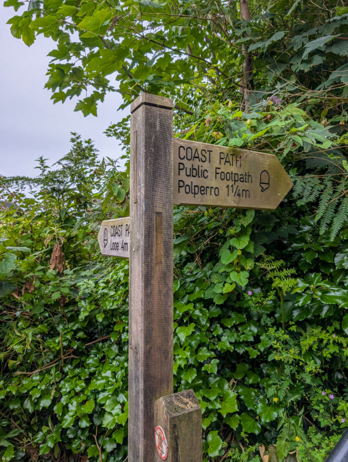
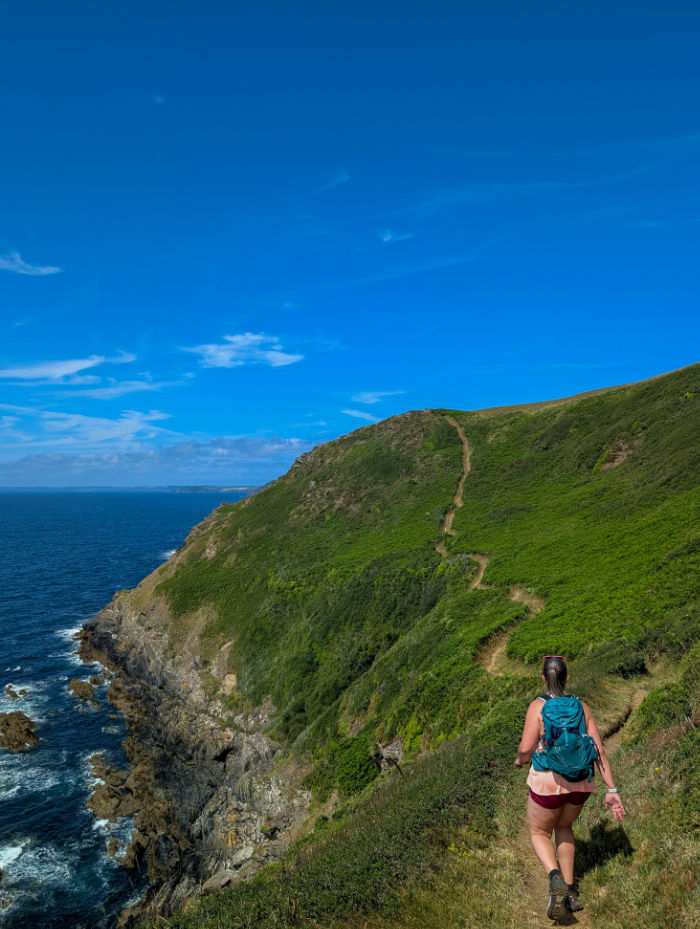
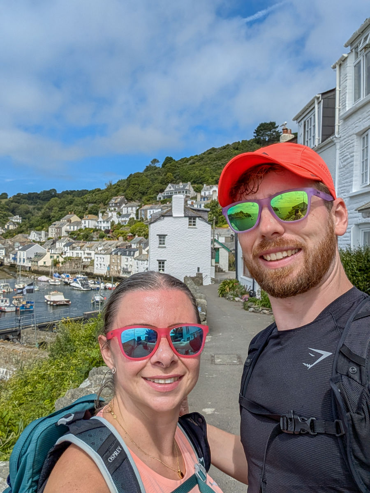
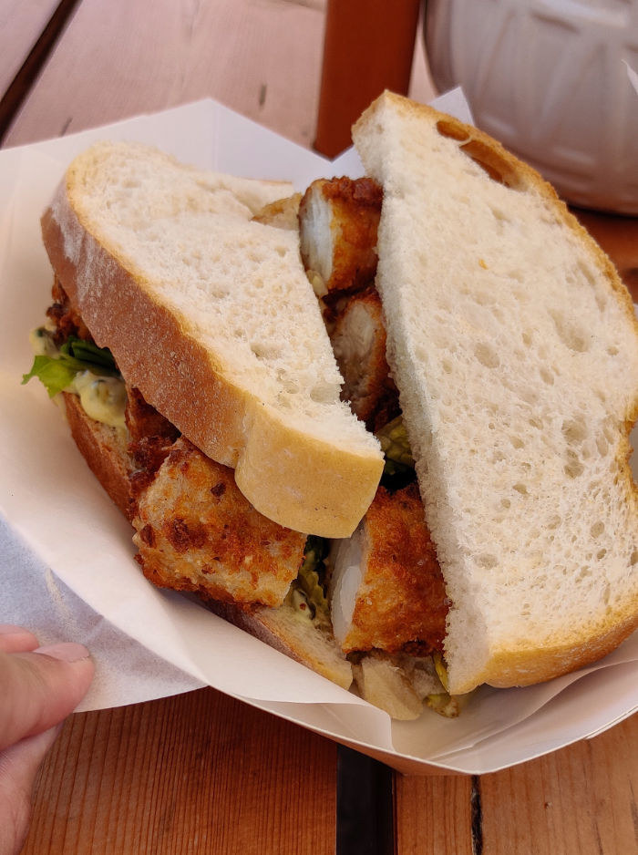
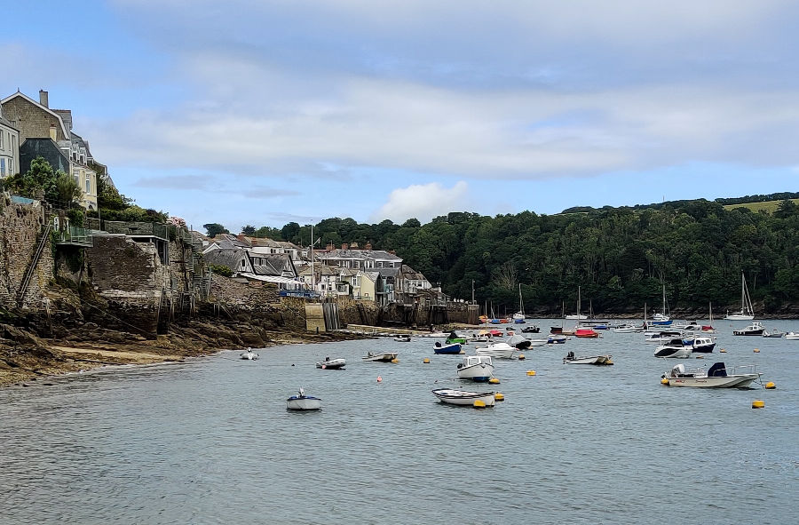
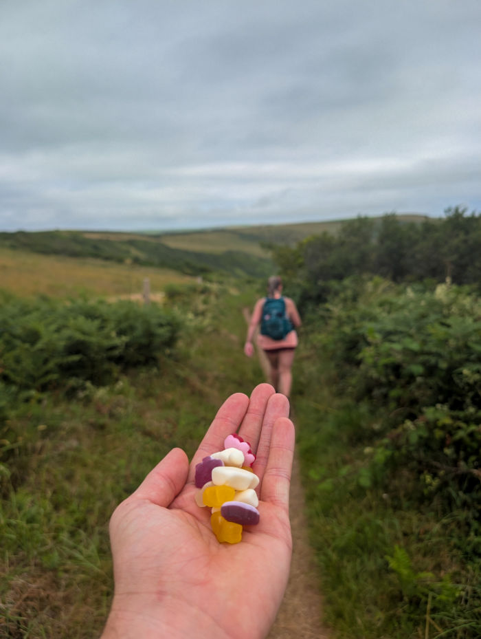
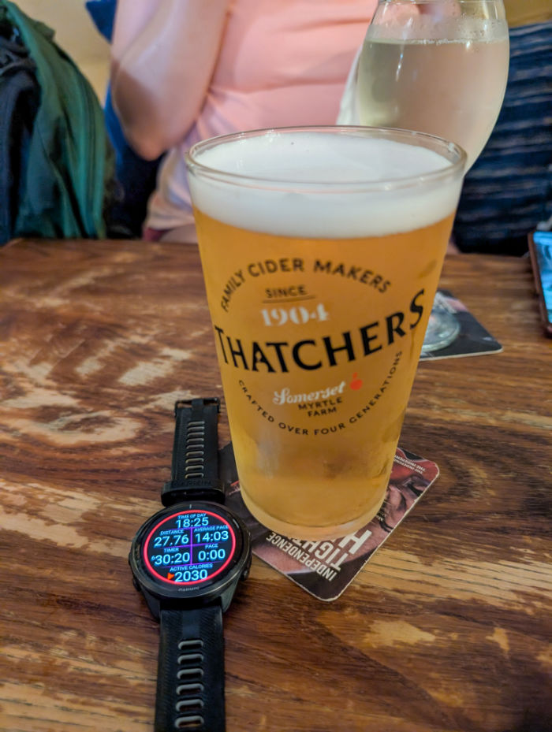

Cornwall is a long way from home, so we broke the drive in Bristol and stayed with Danielle and Ed — a good excuse to see them both and a much gentler start to the trip than one marathon day behind the wheel.
We headed out for drinks and food, landing at Milk Bun for burgers. The wings were great; the burger was merely okay. Along the way Kieran got to fuss a great many dogs and was thoroughly kept happy, and the night finished with cocktails at a bar that was very much Laura's idea of a good time.


An early start took us down to Talland Bay, where we immediately hit our first snag. The only car park on this stretch of coast was cash only, with no way of getting change, so we gave up and parked at the hotel — knowing full well it was far too early to check in.

The plan for the day was ambitious: the 31km coastal route out to Polruan and back, and we set off in good spirits. The views along the coast were superb, and the day was clear and very, very hot. At one point Kieran stopped to take a group photo for a stranger, then jogged to catch up with Laura — and promptly dropped his phone. Luckily one of the group had seen it fall and shouted after him.

We made it to Polruan, marking the halfway point at 15km, and by then Laura's knee was already shot, with a lot of talk about whether she could manage the entire route home.
We took the ferry across to Fowey for a wander and lunch at Captain Hank's: a fish finger sandwich and chips that was just what we needed to refuel.
After a fair amount of moaning about knees, we caught the ferry back and began the long walk home.

"If in doubt, get the sweets out". Despite Laura's knees, we commited to the plan to walk back. Kieran managed to work in a couple of shortcuts to shave off some distance, though they did result in some fun overgrown routes.

After quite a few KMs, we made it to Polperro and grabbed the last available table in the upstairs of the Blue Peter Inn, where we enjoyed a few drinks.

Then disaster struck: no pizza. The restaurant that was supposed to be open wasn't, and by the time we got back to the Blue Peter Inn the kitchen had just closed — at 8pm! With 4km still to go, we trudged back to the hotel on empty stomachs.
Laura checked us in while Kieran drove us to Looe in search of food, only to miss last orders again as the chippy shut. We ended up making do with the limited "picky bits" selection from the Co-Op, eaten in our room at 10pm. The final distance came in at 31km, a personal best for both of us. #Pooped.
We started the day with a properly tasty breakfast at the hotel, then headed back to Looe — this time on foot. Today's walk was shorter, and the pubs were the main attraction. The morning was foggy and cloudy, though that wouldn't last long.
Looe had what it called an "arcade", but it didn't live up to Laura's standards and our pounds disappeared quickly. Even Laura couldn't make a couple of quid in 2p coins last very long.
From Looe we took the forest trail, via "Barcelona". It was packed with flies and stinging nettles, and it won't go down as our favourite walk. But we made it to the Crumplehorn Inn & Mill in Polperro — right where we'd tried and failed to park the day before — for a few much-needed ciders in the sun. Even more needed was a change of tops, because it was another very hot day.
We then wandered down into Polperro proper and up to the rooftop at the 3 Pilchards for scampi and chips, plus pints and wine. After a good while there, we left a rather gloomy-looking Polperro and walked back to the hotel to get ready for the tasting menu.
Unfortunately, over the last hour Kieran had started feeling ropey — so much so that he was all for skipping dinner altogether. Laura wasn't having it, and Kieran eventually "manned up" and came down.
We started with a gin, only to realise it was part of the paired drinks menu. When we explained we didn't want the pairing, they very kindly didn't charge us for it. The food was excellent, with the mackerel, the lamb and goats' cheese, and the coconut and mango "pre-dessert" the standouts.
After another great breakfast, we packed up and began the long drive home, about four hours, with a lot of Cornwall to look back on.
Google Photos won't let its albums load inside another page, so the full set lives over there — click through to browse everything from the trip.